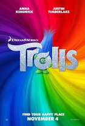
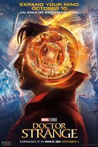
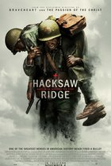
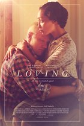

Тролли (2016)
Director: Walt Dohrn | Mike Mitchell
Stars: Anna Kendrick, Justin Timberlake, Zooey Deschanel, Christopher Mintz-Plasse
THE BUZZ: The other trippy-visual movie being released this week has earned heaps of adult praise, first for the musical direction courtesy of Justin Timberlake, then for the story's unexpected message that happiness is an intangible thing that resides inside us all and doesn't need to be teased out with a line of toys or any other cross-promotional tactic.
Доктор Стрэндж (2016)
Director: Scott Derrickson
Stars: Benedict Cumberbatch, Chiwetel Ejiofor, Rachel McAdams, Benedict Wong
THE BUZZ: Marvel's psychedelic gamble should pay off handsomely in the U.S. now that its international weekend tally is in: Stephen Vincent Strange and company opened to the tune of $86 million, owning nearly half of the international marketplace and pacing way ahead of Ant-Man, Captain America: Winter Soldier, and even Guardians of the Galaxy. See our Spotlight on 'Doctor Strange'.
По соображениям совести (2016)
Director: Mel Gibson
Stars: Andrew Garfield, Sam Worthington, Luke Bracey, Teresa Palmer
THE BUZZ: A decade after the bloody, bone-crunching Apocalypto, Mel Gibson's return to the director's chair is no less shocking or relentlessly graphic. Hacksaw Ridge is the true story of Desmond T. Doss, a WWII US Army medic who became the first conscientious objector to win the Medal of Honor. Doss, played by Andrew Garfield, saved dozens of lives in acts of incredible bravery and this film honors both him and those men. With battle scenes that have drawn comparisons to Saving Private Ryan, Garfield and the film are already generating awards buzz. - Michael
Лавинг (2016)
Director: Jeff Nichols
Stars: Ruth Negga, Joel Edgerton, Will Dalton, Dean Mumford
THE BUZZ: We remember 1967 as the year of the Summer of Love, when college students transformed America by growing out their hair, smoking marijuana, and having casual sex. This drama tells the little-known true story of the Lovings, a working-class married couple in Virginia that actually changed the nation's laws. When the Lovings were arrested for violating a state law that prohibited interracial marriage, they took their case to the Supreme Court. Fortunately, this movie is not a dry history lesson. It's a love story. Stars Ruth Negga and Joel Edgerton were recently nominated for Gotham Awards, and, based on the trailer, they have fantastic chemistry. - Sara